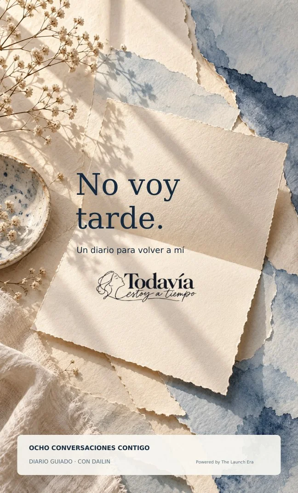

yo también mehe sentido así
DIARIO GUIADO · 8 REFLEXIONES
No voy tarde.
Un diario para volver a mí
Un diario digital de autoconocimiento, inspirado en las conversaciones de la primera serie. Para escuchar tu voz cuando sientes que vas detrás de todo el mundo.
$1.99 USD · PDF DIGITAL
Pago seguro · Una sola vez. Recibirás tu diario por correo después de la compra.
LO QUE ENCONTRARÁS
Un espacio que se siente tuyo.
Preguntas para escribir con calma y reconocer tu propio ritmo.
- 8 reflexiones inspiradas en la primera serie del podcast
- Preguntas de escritura para revisar expectativas y comparaciones
- Espacios para reconocer pequeños logros y decisiones propias
- Un formato digital para volver a sus páginas cuando lo necesites